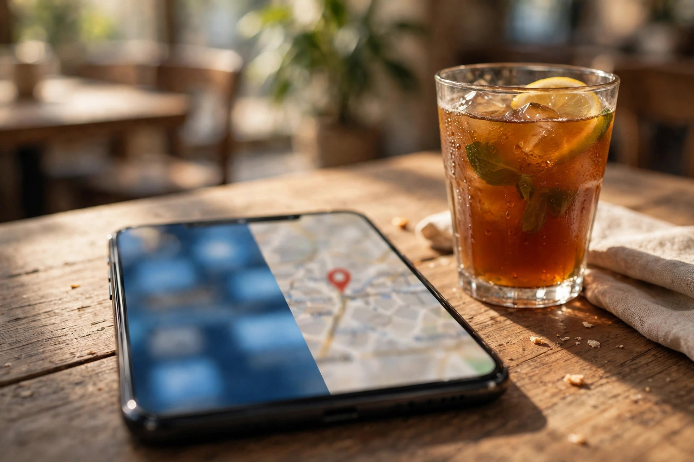

Many Karor Lal Eason business owners ask a fair question: I already have a Facebook page and customers message me there, so why should I care about Google? Others swing the opposite way and wonder if they should leave Facebook entirely. The truth is calmer than either position. Facebook and Google do different jobs in a customer's journey, and a local business usually needs both, each used for what it does well. This article compares them honestly for a business of this town's size.
Zaheer Seo Expert is based in Layyah and has no office in Karor Lal Eason. We help Karor Lal Eason businesses balance both platforms from Layyah, online and by phone, through our SEO services for Karor Lal Eason businesses.
Facebook Is Where Your Existing Audience Talks
Facebook's strength is community. Your followers see your posts, your regulars share your name into local groups, and Messenger and WhatsApp carry the conversation. For announcements, photos of new stock and staying familiar to people who already know you, Facebook is genuinely useful in Karor Lal Eason, where so much trade runs on relationships.
Its limits appear at the edges of that circle. A post is seen briefly, then sinks under newer posts. People who do not follow you, including new residents, travellers and customers in nearby towns comparing options, rarely meet your page at the moment they are ready to buy. And Facebook search is not how most people look for a shop, clinic or service they urgently need.

Google Is Where Buying Decisions Begin
Google's strength is intent. A person searching on Google or Maps usually wants something specific now: a product, a service, a phone number, directions, opening hours. They may have never heard your business name, which is exactly why the search matters. Appearing there, with a complete profile, real photos and honest reviews, puts you in front of customers at the decision moment rather than the browsing moment.
Google results also stay useful in a way posts do not. Your profile shows the same clear information every day, your reviews accumulate instead of sinking, and your website pages can keep answering the same valuable searches for a long time. The Google Business Profile optimization guide explains how that steady presence is built.
A Fair Comparison for a Local Business
- Discovery: Google reaches strangers searching with intent. Facebook mostly reaches followers and their friends.
- Trust: Google reviews sit beside your details where the decision is made. Facebook recommendations help, but are scattered across posts and groups.
- Control: On Google and your own website, your key information stays fixed and findable. On Facebook, reach depends on the platform's changing system.
- Conversation: Facebook and WhatsApp win clearly. Google's job ends by handing the customer to your phone.
- Cost of entry: Both a Business Profile and a Facebook page are free to create. The real cost is the time to keep them accurate.
Seen this way, the platforms are not rivals. Facebook keeps your community warm; Google introduces you to everyone else. Our article on SEO for Karor Lal Eason businesses shows how the Google side is built for businesses in this town, and it assumes your Facebook page keeps doing its own job alongside.

Where Owners Commonly Go Wrong
The common mistake is not choosing the wrong platform; it is expecting one platform to do both jobs. A business active only on Facebook wonders why strangers and travellers never find it. A business that builds a Google presence but ignores messages wonders why enquiries cool off. Another frequent error is letting the two disagree: different phone numbers, different hours or a different name spelling on each platform, which quietly undermines the trust both were meant to build. One consistent set of details, everywhere, is the cheapest marketing discipline there is.
A Sensible Division of Work
For most Karor Lal Eason businesses, a workable pattern looks like this. Keep your Google profile complete and reviewed, because it is your discovery and trust base. Keep your website, if you have one, accurate and useful, because it is the home you control. Use Facebook for community life: posts, announcements and presence in local conversation. Use WhatsApp to convert interest into orders. Each week needs only modest attention once the foundations are correct, and our local SEO and Google Business Profile service exists for owners who would rather that attention came from us.
The question was never really Facebook or Google. It is whether a customer can find you at the moment they need you, and then reach you in the way they prefer. Zaheer Seo Expert, based in Layyah and serving Karor Lal Eason from there, helps businesses arrange both sides properly, as the Karor Lal Eason location page outlines. Keep the conversation where your customers love it. Be discoverable where they search.
Frequently Asked Questions
If I must choose one platform first, which should it be?
For most local businesses, start with a complete Google Business Profile, because it reaches people actively searching to buy. Keep your Facebook page active alongside it as soon as you can.
Does Facebook help my Google ranking directly?
Facebook activity does not directly decide your Google position, but a consistent name, address and phone across both platforms supports trust, and Facebook conversation often leads customers to leave Google reviews.
My customers are all on Facebook. Is Google still relevant?
Yes, for the customers you do not have yet: new residents, travellers, village customers planning a trip and anyone comparing options. Those discovery searches happen overwhelmingly on Google and Maps.
Can Zaheer Seo Expert manage both sides for me?
Zaheer Seo Expert is based in Layyah, with no office in Karor Lal Eason, and focuses on the Google, website and SEO side, set up so it connects properly with the Facebook and WhatsApp activity you already run.
Want More Customers From Google?
Call 0327 7350830 or email seozaheer14@gmail.com. Zaheer Seo Expert, Layyah - Rajan Shah Road, Rana Nagar, Chak 116 TDA, Pakistan. Open 24 hours.
Get Your SEO Strategy →